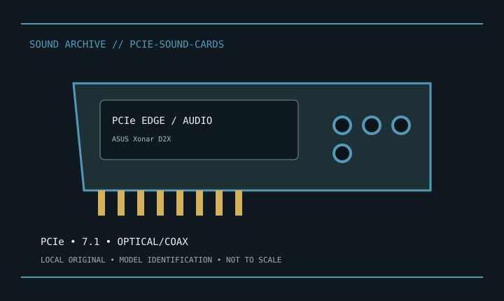

[ INDIVIDUAL MODEL // SOUND HARDWARE ]
ASUS Xonar D2X
PCIe x1 version (not PCI Xonar D2); 7.1 analog, optical/coax S/PDIF, mic/line inputs; ASUS rates playback at 24-bit/192 kHz and 118 dB SNR.

Model-specific specifications
| Exact model / scope | ASUS Xonar D2X. Verify D2X vs PCI D2, auxiliary power and driver version; preserve manual and port map. |
|---|---|
| Bus / host | PCIe x1. |
| Documented functions / connectors | PCIe x1 version (not PCI Xonar D2); 7.1 analog, optical/coax S/PDIF, mic/line inputs; ASUS rates playback at 24-bit/192 kHz and 118 dB SNR. |
| Conversion / formats | Digital rates and driver modes are model-specific; consult the linked manufacturer manual. |
| Drivers / OS | Use the linked model-specific manufacturer support/manual page. Driver and supported OS availability depends on release; no undocumented OS compatibility is asserted. |
| Power / microphone | No 48 V XLR supply unless explicitly noted for a bundled external module. |
Compatibility & preservation
Verify D2X vs PCI D2, auxiliary power and driver version; preserve manual and port map.
- Photograph model/revision, connectors and included accessories before service.
- Retain the matching manual, driver/firmware and known-working host/routing configuration.
- Follow documented signal levels, connector pinout and power requirements; physical fit alone is not compatibility.
Manufacturer sources
- Manufacturer product information — ASUS Xonar D2XProduct/model source; match the exact revision and board.
- Manufacturer support and documentationOfficial model documentation, drivers and OS compatibility information.